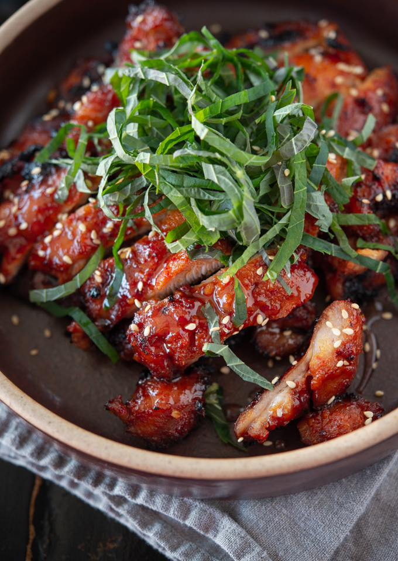

CHICKEN BULGOGI (KOREAN BBQ CHICKEN)

Preparation time:
2 hours
INGREDIENTS
- Boneless skinless chicken thigh
- Gochujang (Korean chili paste)
- Gochugaru (Korean chili flakes)
- Soy sauce
- Light brown sugar
- Korean corn syrup
- Garlic
- Ginger puree
- Sesame oil
METHOD
-
Pound chicken thigh with a meat hammer. This will tenderize chicken and
help cook the chicken faster and more even.
-
Mix all the seasoning ingredients in a large mixing bowl to make the
paste.
-
Add chicken and toss well to coat the chicken with the seasoning. I
recommend to let it sit in a room temperature for 10 minutes while you
are preheating the oven to broil.
-
Grease a cooling rack and place it on a large baking sheet (lined with
piece of foil for easy clean up). Put chicken pieces and broil for 4-5
minute per each side until the surface is slightly charred and chicken
is fully cooked.
-
The oven shelving should be about 5-6 inch below the heat source. Watch
carefully so that you dont char the chicken too much.
-
Cut up the chicken into a bite size chunks for easy serving. Transfer on
a serving dish and garnish with perilla leaves or chopped green onion.
Korean Cuisines
Main Menu